4. Medieval Britain - Norman Britain (1066 AD to 1154 AD)

Following the Norman invasion of 1066 AD, the church is reformed and reorganised to bring it into line with the continental Christian church…many abbeys and priories are established…tensions between the king and the pope prevailed…

William I 1066-1087
William I had good relations with Pope Alexander (1061-1073). Alexander had given William the Papal banner to take to Hastings, plus they both wanted to reform the corrupt English church and bring it in line with Europe. William also agreed to get rid of Simony and enforce celibacy, however his main aim was to remove corrupt Anglo-Saxon bishops. Alexander ordered William to do penance for all the lives lost at Hastings; in return William built Battle Abbey, which was finished in 1095. William’s relations with Pope Gregory VII (1073-1085) were not so good. Firstly, Gregory thought the church had more authority than kings – William did not agree. Gregory wanted all English bishops to travel regularly to Rome to report to him; he wanted direct control over discipline and teachings; he also demanded William swear fealty to him, but William refused. However, William did agree to the ‘Peter’s Pence’ where 1 penny from every house was given to the Pope.
William II 1087-1100
The poor relations with Pope Gregory continued under William II. In 1078 Gregory banned kings from appointing bishops and abbots. However, relations improved slightly when Pope Urban II (1088-1099) agreed not to interfere in English appointments, but their relationship overall remained hostile. William II was not a religious man and his morality was an issue, he also had no interest in continuing church reforms. William II used taxes to take money from religious houses and used religious positions to reward and promote people.
Henry I 1100-1135
Henry I had a better relationship with the papacy than William II. Henry promised to end William II’s policy of gaining money from the church. However, the Investiture Controversy increased tensions significantly. When bishops were consecrated, they were given the ring and staff by the king. This practice implied the bishop depended on the king for their spiritual power rather than the Pope; the church did not agree with this. In 1103, Archbishop Anselm refused to pay homage to Henry I and so he was exiled. Pope Urban threatened Henry with excommunication until finally an agreement was reached in 1107 that the bishops could pay homage to the king before they were consecrated.
Stephen 1135-1154
King Stephen's relationship with the Church was complex and crucial to his reign, initially requiring him to seek and secure ecclesiastical support to gain the throne, as shown in his "Charter of Liberties". However, the relationship deteriorated, culminating in the arrest of bishops in 1139, which significantly weakened his position and was a major factor in losing the support of the church and paving the way for Empress Matilda's invasion.
The main effect of the Norman Invasion of Britain was to reform and bring the church in England in line with the church on the Continent (the church had deteriorated and become corrupt due to lack of leadership in Anglo-Saxon England), but to do so under the leadership of the King. At the time of the Norman Invasion of Britain, the Archbishop of Canterbury was Stigand whose elevation to Archbishop had not been recognised by the papacy; his controversial position (pluralism with Winchester) influenced Pope Alexander II's support of William's invasion of England. William of Normandy was a devout and a loyal follower of the Pope, and had been responsible for building many new monasteries in Normandy.
References:
Wikipedia - William the Conqueror
At this time, papal power was increasing across the Continent, with many reforms taking place in Europe, but William refused to become subservient to the Pope and resisted attempts by the papacy to interfere with his initiative in England to build a better Church. After the invasion, King William I, although not head of the church, was always involved in decisions about appointments of church leaders (as the church had much power and land, it was essential to William's success to tap into this power and wealth).
Reorganisation and Reform
In 1070, the Pope, Alexander II, sent an ambassador to England to carry out the second coronation of King William I, after he had successfully overcome the rebellious north of England. The Pope’s men crowned William at Easter, and then they deposed Stigand from his position as Archbishop of Canterbury. A few weeks later, at Whitsun, a Church council meeting appointed Lanfranc (abbot at Caen) as Archbishop of Canterbury.
Reference: Wikipedia - Lanfranc
Following his appointment, Lanfranc set about a programme of reorganisation and reform within the church. This included replacing existing Anglo-Saxon Bishops with Norman Bishops, prohibiting simony, the separation of Christian courts from civil courts, the appointment of archdeacons, and the removal of some smaller sees. The Normans were enthusiastic builders and quickly replaced many Anglo-Saxon churches with their own designs. By the time of King William I's death, the Church of England was much stronger and more efficient than it had been under the Anglo-Saxons.
Monastic Enthusiasm
Most monastic communities were developed in the wave of monastic enthusiasm that swept western Christendom in the 11th and 12th Centuries. Typically, 11th and 12th Century founders endowed monastic houses with revenue from landed estates and tithes appropriated from parish churches under the founder's patronage.
200 more houses of friars in England and Wales constituted a second distinct wave of monastic zeal in the 13th century. Friaries, for the most part, were concentrated in urban areas. Unlike monasteries, friaries had no income-bearing endowments; the friars, as mendicants, were supported financially by donations from the faithful, while ideally being self-sufficient and raising extensive urban kitchen gardens.
Monastic Houses in Shropshire
- Alberbury Priory
- Bridgnorth Greyfriars, Franciscan Friars, 1244-1538
- Bromfield Priory
- Buildwas Abbey
- Chirbury Priory, Augustinian Canons, 1190-1536
- Church Preen Priory, Cluniac Monks, alien house, 1150-1539
- Donnington Wood Abbey, Augustinian Canons, 1144-1148
- Halston Preceptory, Knights Hospitaller, 1165/1187-1540
- Hatton Grange, Cistercian Monks, 1227-1540
- Haughmond Abbey
- Lilleshall Abbey
- Lizard Abbey, Augustinian Canons, 1143-1144
- Ludlow Austin Friars, Augustinian Friars, 1254-1538
- Ludlow Whitefriars, Carmelite Friars, 1350-1538
- Lydley Keys Preceptory, Knights Templar, 1155/60-1308/12
- Morville Priory
- Ratlinghope Priory, Augustinian Canons, 1200-1538
- Shrewsbury Abbey
- Shrewsbury Austin Friars, Augustinian Friars, 1255-1538
- Shrewsbury Blackfriars, Dominican Friars, 1232-1539
- Shrewsbury Greyfriars, Franciscan Friars, 1245/6-1538
- Snead Priory, Augustinian Canons, 1190-1195 (transferred to Chirbury)
- Stanton Long Camera, Knights Templar, 1221-1308/12
- Wenlock Priory
- White Ladies Priory
- Wombridge Priory
- Woodhouse Austin Friars, Augustinian Friars, 1250-1538
Reference: Wikipedia - List of Monastic Houses in Shropshire

Monastic Houses in Shropshire
Roger de Montgomery
In circa 1071 AD Roger de Montgomery is granted estates in Shropshire and sometime after he is appointed 1st Earl of Shrewsbury.
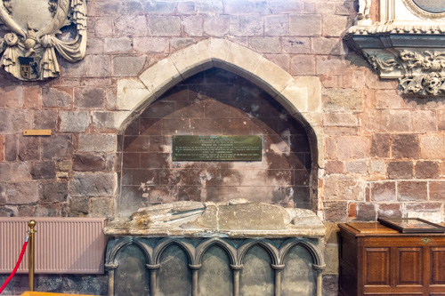
Shrewsbury Abbey - Roger de Montgomery

Church Building - Norman
Also known as English Romanesque architecture, the Normans were primarily responsible for introducing this style of architecture following the conquest of Britain (although the Norman style of architecture was already influencing some building in England before the conquest). The change did not happen immediately, however, and so buildings from the last 30 years of the 11th Century show Saxon and Norman influence. From 1100 AD the Saxon influence ceased to exist in buildings.
The Norman arch is the defining feature of Norman architecture. Norman arches are semi-circular. Early examples have plain, square edges; later ones are often enriched with the zig-zag and roll mouldings (3). The arches are supported on massive columns, generally plain and cylindrical, sometimes with spiral decoration; occasionally, square-section piers were used. Main doorways have a succession of receding semi-circular arches, often decorated with mouldings, typically of chevron or zig-zag design; sometimes there is a tympanum (4) at the back of the head of the arch, which may feature sculpture representing a Biblical scene.
Norman windows are mostly small and narrow, generally of a single round-headed light; but sometimes, especially in a bell tower, divided by a shaft into two lights.
The main characteristics of Norman architecture are:
- best described as powerful and masculine
- defined by semi-circular arches
- deeply recessed doorways
- thick walls
- massive round pillars
- vaulted ceilings
- ornaments such as zigzag moulding and bird and animal forms
In Shropshire, most medieval churches date from the 12th or 13th Centuries, i.e. they are Norman, Transitional (see below) or Early English Gothic (see below), then the amount of building declined from the early 14th Century. A growing population in the 12th and 13th Centuries meant that some existing churches were extended (typically, laterally by adding arcades - Norman arcades are rare but may be seen at Shawbury and Clun).
Usually churches with parochial status were two-cell (separate nave and chancel) and chapels single-cell form. But there are exceptions - single cells churches include Hadnall, Leebotwood and Lydham - two cell churches include Heath Hope Bagot and Clee St Margaret. Single cell churches hardly appear before second half of 12th Century.
Early Norman building (say until 1120) is characterised by herring bone masonry - Clee St Margaret, Culmington, Pitchford, Rushbury, Sidbury and Stanton upon Hine Heath all contain this feature.
Another sign of early Norman is use of Tufa - Quatford is a good example of this - the use of tufa declined by mid 12th Century.
Holy Trinity, Much Wenlock, the chancel and nave are Norman and the tower is Transitional.
St Mary, Edstaston, is another example of a Shropshire church which dates from the Norman period and which retains many Norman features.
St Gregory, Morville, retains almost all of its Norman features.
3: A molding, also spelled moulding, in architecture and the decorative arts, is a defining, transitional, or terminal element that contours or outlines the edges and surfaces on a projection or cavity, such as a cornice, architrave, capital, arch, base, or jamb.
4: A tympanum, plural tympana, in Classical architecture, is the area enclosed by a pediment (5), whether triangular or segmental. In a triangular pediment, the area is defined by the horizontal cornice along the bottom and by the raking (sloping) cornice along the sides; in a segmental pediment, the sides have segmental cornices.
5: A pediment, in architecture, is triangular gable forming the end of the roof slope over a portico (the area, with a roof supported by columns, leading to the entrance of a building); or a similar form used decoratively over a doorway or window.

Holy Trinity, Much Wenlock

St Mary, Edstaston

St Gregory, Morville
1075 AD: Orderic Vitalis
Orderic Vitalis was born in Atcham and baptised in the church (along with Wroxeter, Atcham church was built with stone plundered from Viroconium). He is credited with writing the Historia Ecclesiastica, a work detailing the history of Europe and the Mediterranean from the birth of Jesus Christ.
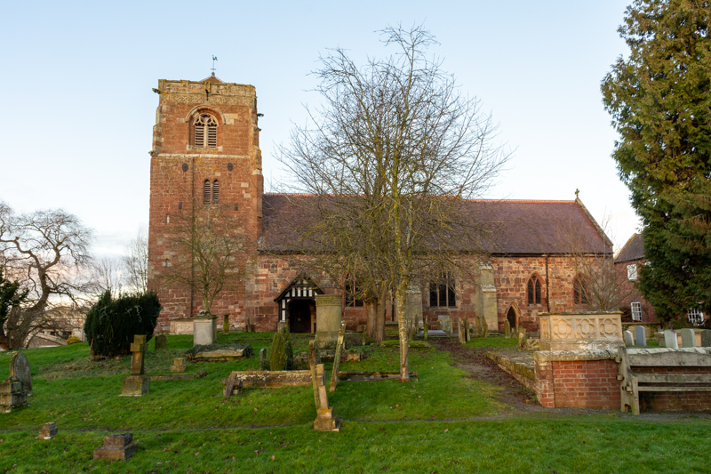
St Eata, Atcham
Reference: Wikipedia - Orderic Vitalis
1079 to 1082 AD: Wenlock Priory Re-founded
Roger de Montgomery re-founded Wenlock Priory, or St Milburga's Priory, as a Cluniac house (one of the first in England) between 1079 and 1082, on the site of an earlier 7th Century monastery.
1083 AD: Shrewsbury Abbey Founded
Shrewsbury Abbey was founded in 1083 as a Benedictine monastery by the Norman Earl of Shrewsbury, Roger de Montgomery. It grew to be one of the most important and influential abbeys in England, and an important centre of pilgrimage.

Shrewsbury Abbey
Reference: Wikipedia - Shrewsbury Abbey
Founding of Quatford Church
Roger de Montgomery (the first Earl of Shrewsbury who owned most of Shropshire) established the first church (and a castle) at Quatford in 1086 AD, but it wasn't long before Bridgnorth was settled upon as a better location. De Montgomery's first wife was murdered, his second wife Adeliza de Pusey had to travel from France. While she was sailing across the English Channel, the priest on board dreamed that if Adeliza survived the journey she should vow to build a church in honour of the Blessed Mary Magdalene at the place where she would first meet her husband. This is the legend of how Quatford was chosen as the site of this church. Roger and Adeliza met in 1083 or 1084, the church was completed in 1086 and was richly endowed by de Montgomery.
The original church was completely rebuilt in the 12th Century.
1086 AD: Domesday Book
The Domesday Book is completed in 1086, see: Open Domesday
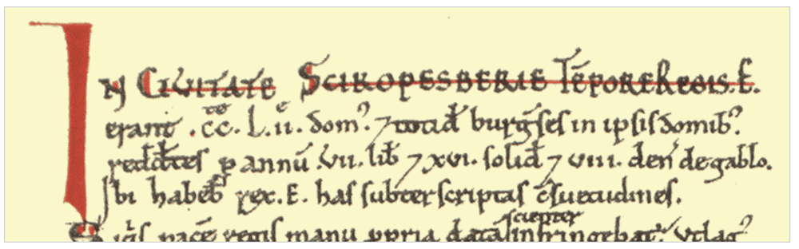
Shropshire Churches in the Domesday Book
The list below itemises the churches mentioned in the Domesday Book:
- Baschurch, All Saints
- Berrington, All Saints
- Bitterley, St Mary
- Burford, St Mary
- Chirbury, St Michael the Archangel
- Church Stretton, St Laurence
- Diddlebury, St Peter
- Great Ness, St Andrew
- Hodnet, St Luke
- Holdgate, Holy Trinity
- Lydbury North, St Michael and All Angels
- Maesbury, St John the Baptist
- Morville, St Gregory
- Rodington, St George
- Shawbury, St Mary
- Stanton Lacy, St Peter
- Stanton-upon-Hine Heath, St Andrew
- Stoke on Tern, St Peter
- Stottesdon, St Mary
- Wrockwardine, St Peter
- Wroxeter, St Andrew
Several other locations are mentioned as having a priest.
The Domesday Book includes Aldon church which no longer exists.
The Domesday Book does not record every church that existed at the time, so other churches are likely to have been built prior to the invasion.
Cressage
At the time of the Domesday Book, Cressage was known as Cristes-ache (Christ's oak) from a tradition that the gospel was first preached in this locality from beneath the shade of an oak tree (ref: Nooks and Corners of Shropshire).
Marcher Lordships
The Marcher Lordships are established in the late 11th Century.
(circa) 1100 AD: Haughmond Abbey Founded
Haughmond Abbey is founded (it was an Augustinian monastery).

Haughmond Abbey
Reference: English Heritage - Haughmond Abbey
Sedilia
A Sedilia is the recessed stone seats for clergy on the south side of a church altar, first appeared in English churches during the 12th century (Romanesque period), evolving from simple niches into standard, decorative features by the early 13th century.
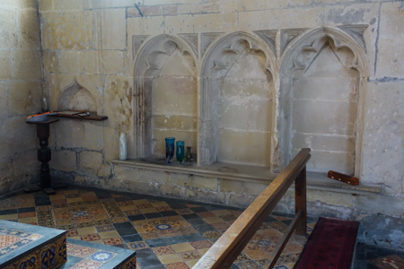
St Mary Magdalene, Battlefield - Sedilia
(early) 12th Century AD: Wombridge Priory Founded
Wombridge Priory is founded by William of Hadley (it was a small Augustinian monastery).
Coffin Lids
In the early 12th Century, and persisting for about 200 years, it was practice to put a carved stone lid on a coffin to provide a permanent memorial to the person buried beneath. There are relatively few parish churches in Shropshire with medieval memorials, but examples may be found at Cheswardine, Eaton-under-Heywood, Quatford, Ruyton-XI-Towns, Shifnal and Shrewsbury Abbey.
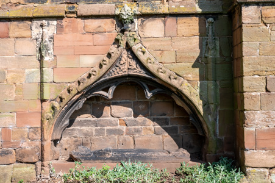
St Andrew, Shifnal - Coffin Lid
12th Century AD: Stapleton
The present church was built in the 12th Century and for reasons unknown it was originally a two storey building, a possibly unique feature amongst churches. The second storey was built on top of the very thick walls of a Saxon or Early Norman church. The church was on the upper floor and the ground floor is assumed to have been an under croft (no trace now remains of the under croft (removed in 1786)).

St John the Baptist, Stapleton
12th Century AD: Edstaston Door
Traditionally facing the village or town, the south door is the main entrance for congregants, representing the transition from the ordinary, secular world into the sacred space.
Edstaston church is notable as it has what are considered the finest Norman doorways in Shropshire.
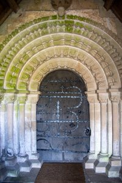
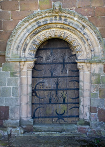
St Mary, Edstaston - Doors
12th Century AD: Quatford Tufa
Quatford church is constructed of Tufa, a porous, lightweight limestone formed by mineral springs; it was a popular building material for 11th and 12th Century Norman churches in England, particularly in Herefordshire and Kent. Prized for its soft texture when quarried, which hardened over time, it was used for walls, arches, and dressings, often signifying early Norman work. The use of Tufa is less common in Shropshire, as the local sandstone was more commonly used.
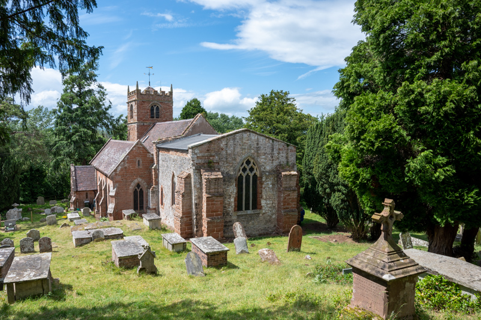
St Mary Magdalene, Quatford
12th Century AD: Vesica Window
Ashford Carbonell church has an unusual arrangement of windows, which includes a Vesica window (restored in the 19th Century). The vesica piscis (literally fish's bladder) had the same meaning for the early Church as the symbol of the fish, the Greek word for fish is ichthus and is composed of the initial letters of the Greek for 'Jesus Christ, Son of God, Saviour'. A vesica window is rare in English parish churches, during the restoration two Norman windows were revealed and above them the stones which were part of the ancient vesica window.
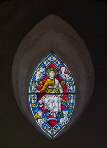
St Mary, Ashford Carbonell - Vesica Window
1135 AD: Buildwas Abbey Founded
Buildwas Abbey (Monastery of St Mary and St Chad of Buildwas) was founded as a Savigniac monastery in 1135.

Buildwas Abbey
Reference: English Heritage - Buildwas Abbey
1138 AD (19th September ): St Winefride's Relics
In Shrewsbury, the abbey church was ready for consecration by 1130 but did not have any holy relics and the monks were envious of the many said to be in Wales. The monks of Shrewsbury began negotiations to obtain the relics of St Winefride for their abbey. With the consent of the Bishop of Bangor Herebert, the Abbot of Shrewsbury dispatched Prior Robert and another monk called Richard to Wales to obtain St Winefride's relics. The relics of St Winefride were finally translated to the Abbey on 19th September 1138. The shrine of Saint Winefride in Shrewsbury Abbey became a popular place of pilgrimage. The shrine of Saint Winefride at Shrewsbury was destroyed in the reformation. A fragment possibly of the shrine or of a reredos was recorded by the Rev. Blakeway in the early nineteenth century.
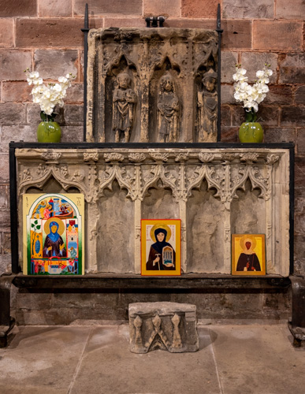
Shrewsbury Abbey - St Winefride's Relics
Saints
Some of the key saints associated with Shropshire are:
- St Chad
- St Milburga
- St Winifred
- St Eata
- St Oswald
- St Werburgh
Reference: Shrewsbury Orthodox Church
1138 AD: Morville Priory Founded
Morville Priory was a small Benedictine monastery.
The origins of the priory at Morville lie in the earlier parish church. There was a collegiate church or minster at Morville, dedicated to St Gregory and served by eight canons, in the reign of Edward the Confessor and possibly earlier.
It was not until 1138 that the church definitively became a priory.
1144 AD: Donnington Wood Abbey Founded
Donnington Wood Abbey is founded (Augustinian Canons).
1145 to 1148 AD: Lilleshall Abbey Founded
Lilleshall Abbey is founded (it was an Augustinian monastery).
1148 - Transferred from Donnington Wood Abbey (which was closed).

Lilleshall Abbey
Reference: English Heritage - Lilleshall Abbey
1150 AD: Church Preen Priory Founded
Church Preen Priory is founded (it was home to Cluniac Monks and an alien house).

St John the Baptist, Church Preen
1150 AD: Myndtown Bell
One of the two bells at Myndtown is believed to date from 1150 AD, making it one of the oldest bells on the National Bell Register.
Reference: National Bell Register
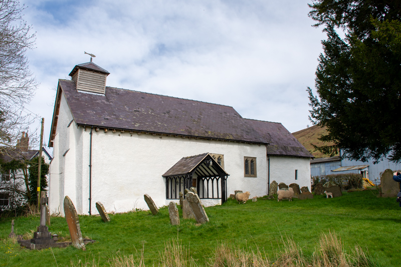
St John the Baptist, Myndtown
Gargoyles
Originating from the French gargouille ("throat"), these figures served both practical drainage needs and symbolic purposes, such as warding off evil spirits.
A gargoyle is a projecting waterspout, usually incorporating a lead pipe. They were often carved in the shape of grotesque faces, beasts or figures. Gargoyles appear to have been first introduced around 1200.
Celtic warriors were known to chop off the heads of defeated enemies and display them in public. This may account for the popularity of gargoyles.
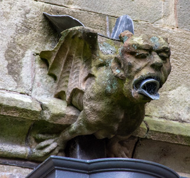
St Mary Magdalene, Hadnall - Gargoyle